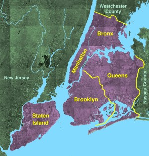

| Uvod |
Geografija |
Istorija |
Izgled |
Demografija |
Autor |
Geografija grada
Njujork leži na istočnoj obali Amerike u saveznoj državi Njujork, na ušću reke Hadson i na Ist Riveru, prosečno 6 metara nadmorske visine. Na suprotnoj,
zapadnoj obali Hadsona nalazi se Jersey City u susednoj državi New Jersey. Geografske koordinate su 40,46 stepeni severne širine i 73,54 zapadne dužine.
Podela
Gradsko područje je podeljeno na pet četvrti koje su istovremeno okruzi države Njujork.

- Manhattan
- Brooklyn
- Bronx
- Queens
- Staten Island
Klima
Grad se nalazi u zoni umerene klime. Prosečna godišnja temperatura je 12,5 °C, a godišnja količina padavina prosečno iznosi 1.071 mm.
Najtopliji mesec je jul sa prosečno 24,7 °C, a najhladniji januar sa -0,4 °C.
Najviše padavina padne u julu, prosečno 104 mm, a najmanje u januaru, 81 mm.